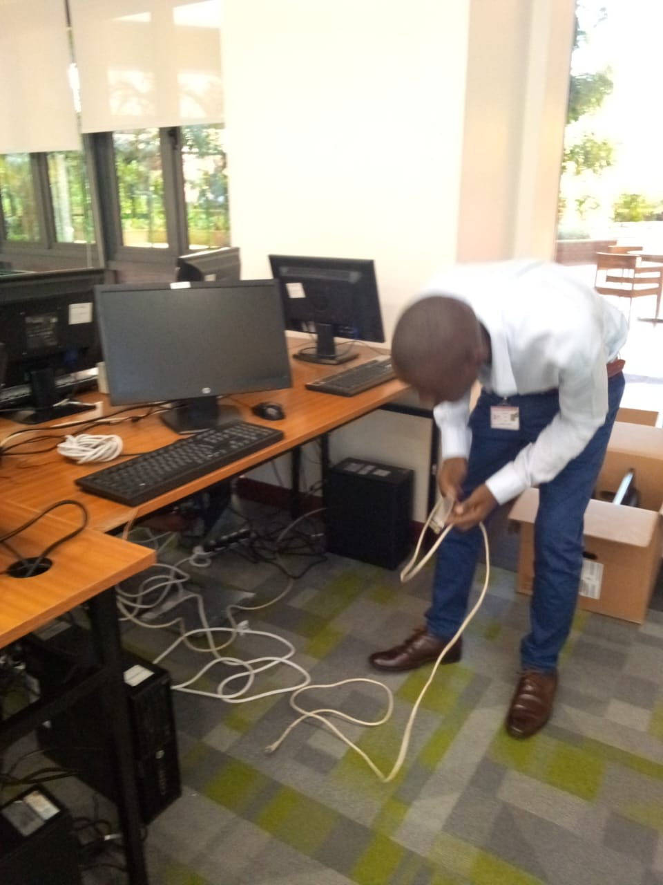
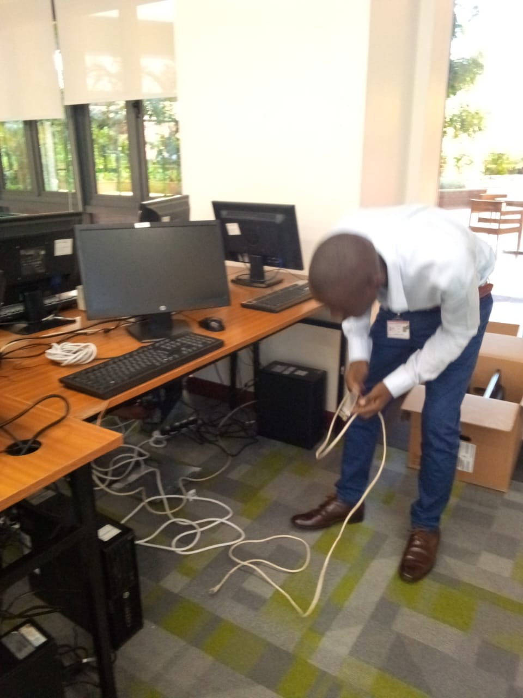

My name is Felix Matata Mwonga , currently working as a sales representative . my current job has enhanced me with excellent communication skills and problem solving skills in when approaching customers , training them and customer support. I have worked at Aga khan Hospital University during the Launch of a new Hospital software. I did installation of software and hardware in preparation for the new software in various clinics in the country including the main hospital. I also did repair and maintenance of hardware such as printers, desktops , laptops . After successful launch of the software , I was selected and given the role to retrain and assist user with data entry and maneuvering through the software. Having been a Moja Tu beneficiary , I took part in volunteering . I assisted in many ways and ended up with Moja Tu Franklin Award last year. I love to see students accomplishing there dreams and motivating them is something which makes me feel awesome. I also worked at Daystar University as an IT intern . I learned a lot in terms of interacting with students and lecturers. I worked as a student support , solving hardware and software issues with printers, desktops, projectors and wifi connection. I am confident that I can bring a unique and valuable perspective to your team. I am excited about the possibility of joining Techlitafrica.org . Thank you for your time and consideration